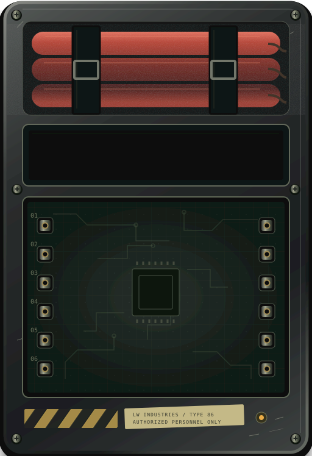

✳
LAST WIRE
해체 사업부 / 1986
OFFLINE OPERATION
장비
⚙ 설정
?
계약
01
보유 자금
₩0
검수 목표
₩1,000
생존 장비
▰ ▰ ▰
검수까지 4회
작업 1/4 · 1–4번
FIELD UNIT / 086
86—001

회수 가능 금액
₩0
보상 배수
×1.00
0 / 6 CUT
LIVE CIRCUIT
시간 제한 없음
선택한 전선 절단
지금 금액으로 정산
철수하기 ↗
전선에 마우스를 올리거나 터치해 보세요.